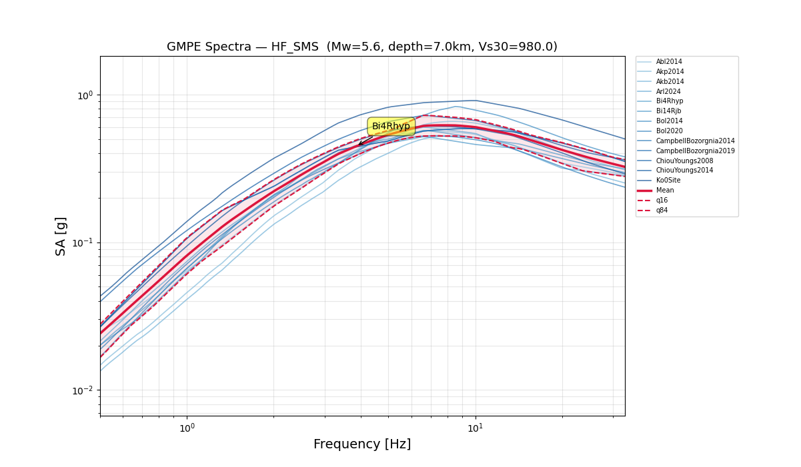
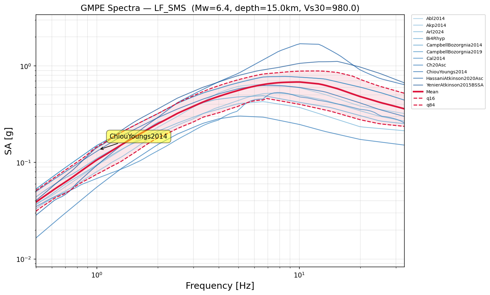

Interactive graphical tool for browsing, filtering, and selecting GMPEs — gmpe_selection_gui.py
The GMPE Selection GUI is a Tkinter-based graphical application that lets you
browse the full OpenQuake GSIM catalogue (300+ GMPEs), filter them by
tectonic region, distance metrics, site parameters, and more, then save your selection
as a JSON file for downstream use in compute_targetspectra.py.
Usage: python src/gmpe_selection_gui.py or
python src/gmpe_selection_gui.py --catalogue gmpe_catalogue.csv
compute_targetspectra.py, which relies on
gmpe.py
for all GMPE spectrum computations. The GUI itself is a selection tool only —
it does not compute spectra. See the
gmpe.py Algorithm Guide
for details on how the selected GMPEs are evaluated.
When launched, the application presents a three‑option wizard before the main window appears:
Opens a file dialog to load a previously saved *.json selection.
The loaded GMPEs populate the Selected panel directly — useful when
you already have a selection ready and want to review or modify it.
Opens a step‑by‑step questionnaire dialog (see below). After answering all questions, the tool applies your criteria as filters and pre‑populates the selection with matched GMPEs. This is the recommended workflow for new projects.
Opens the main window with empty selections and default filter values. Everything is manual — no automated pre‑population.
The guided questionnaire collects seven filter criteria:
Free‑text name used for the output filename.
Min and max publication year (e.g. 2014 – present).
Checkboxes for region types (Active Shallow Crust, Stable Shallow Crust, Subduction Interface, etc.). Substring match.
At least one must be supported. Defaults: rjb, rhypo, rrup.
All must be supported. Default: vs30.
All must be supported. Defaults: SA, PGA, PGV.
All must be supported. Default: Total.
After the guided questions, two additional dialogs help refine the candidate list:
Detects GMPEs containing country keywords (Japan, China, Taiwan, Turkey, Italy, California, etc.) and asks whether they are relevant to your project. GMPEs for irrelevant regions are removed.
Groups GMPEs by family (same base name before the year). For families with
multiple variants, you may keep all, remove all, or pick specific ones.
Example: the AbrahamsonEtAl2014 family has variants
RegCHN, RegJPN, RegTWN, NSHMPLower, NSHMPMean, NSHMPUpper.
The main window is split into three logical zones:
| Zone | Description |
|---|---|
| 📌 Left — Filters Panel | Scrollable panel with six filter groups:
|
| 🔄 Centre — Dual‑Pane Transfer | Available GMPEs (left tree) → Selected GMPEs (right tree). Select items and use the arrow buttons, double‑click, or right‑click context menu. A search box filters the available list by name / code. An Add by name entry allows quick substring matching. |
| 📖 Bottom — Detail Panel | Click any GMPE in either list to see its full metadata in a readable text view: year, tectonic region, required distances, site parameters, rupture parameters, IMT coverage, standard deviation types, and a human‑readable description. |
Each selection is saved as a JSON file containing [shortcut, full_OQ_name] pairs
organised by event key. Example from GMPE_selection.json:
{
"LF_SMS": [
["Ab2014", "AbrahamsonEtAl2014"],
["Ak2014", "AkkarEtAlRhyp2014"],
["Bi2014Rhyp","BindiEtAl2014Rhyp"],
["CB2014", "CampbellBozorgnia2014"],
…
],
"HF_SMS": [
["Ak2014", "AkkarEtAlRhyp2014"],
["Ak2014", "AkkarEtAlRjb2014"],
["Bo2014", "BooreEtAl2014"],
["Bo2020", "BooreEtAl2020"],
["CB2014", "CampbellBozorgnia2014"],
["CY2014", "ChiouYoungs2014"],
…
]
}
compute_targetspectra.py,
which reads the GMPE list for each event, computes the target spectra via
gmpe.py,
and generates the GMPE spectra report.
gmpe.py Dependence
The catalogue CSV (gmpe_catalogue.csv) is auto‑generated by scanning all
available GSIMs via OpenQuake's gsim.get_available_gsims(). If the file
is missing, gmpe_selection_gui.py spawns the OpenQuake Python environment
to rebuild it.
Important: The GUI itself does not compute spectra — it only
manages the list of selected GMPEs. The actual computation is delegated to
gmpe.py
(the gmmtools class), which wraps OpenQuake's hazardlib. See the
gmpe.py Algorithm Guide
for the full computation details, including automatic frequency selection and
parameter inference.
The following figures illustrate the GMPE selection results for the two reference scenarios (HF_SMS and LF_SMS). The mean, median, and ±1σ percentiles are computed across all selected GMPEs.
13 GMPEs · Mw 5.6 · depth 7 km · Vs30 980 m/s

8 GMPEs · Mw 6.4 · depth 15 km · Vs30 980 m/s

Additional full‑resolution PDF reports are auto‑generated by
compute_targetspectra.py:
GMPE_spectra_HF.pdf and GMPE_spectra_LF.pdfHF_SMS_gmpe_report.html and LF_SMS_gmpe_report.htmlThe GUI automatically generates short codes for each GMPE using the rule:
| Full Name | Shortcut |
|---|---|
| AbrahamsonEtAl2014 | Ab2014 |
| BooreEtAl2014 | Bo2014 |
| CampbellBozorgnia2014 | CB2014 |
| ChiouYoungs2014 | CY2014 |
| AkkarEtAlRjb2014 | Ak2014 |
| KothaEtAl2020Site | Ko2020Site |
| AbrahamsonEtAl2014RegJPN | Ab2014RegJPN |
python src/gmpe_selection_gui.py
gmpe_selection.json (or a custom filename).
compute_targetspectra.py reads the JSON
and uses gmpe.py
to evaluate all selected GMPEs, then generates the GMPE spectra reports (HTML + PDF) and the
.tgt target spectrum file.
download_seeds.py) and spectral matching (rspm09).